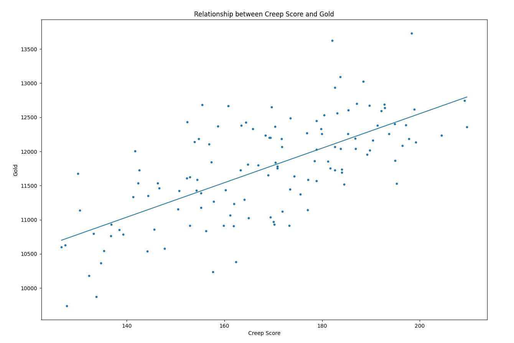

For my project on linear regression, I used data from a game called League of Legends. League of Legends is a team-based game involving 2 teams, 5 players on each team. In this game, players use gold to buy items which increase their strength for the team fights. There are 5 different roles, with over 100 different legends. For this project, I decided to see how a character’s creep score relates to their gold. Since you get gold for each creep score you have, it would make sense that the relationship is linear, however, getting creep score is not the only way for one to get gold in the game, it is just a method to do so.
I used python as the programming language for this project. Using data from millions of games, I took the average of most characters creep score, filtered out support, a role that generally doesn’t really on creep score for gold, and then plotted it. I then added a linear regression model. Which predicted that Gold = 25.3*Creep Score + 7499.6.
import pandas
import matplotlib
import numpy as np
import matplotlib.pyplot as plt
from sklearn.linear_model import LinearRegressionleague_data = pandas.read_csv('League_of_Legends_stats.csv')
league_data['Gold'] = league_data['Gold'].map(lambda s: int(s.replace(",", "")))
league_no_support = league_data[league_data['CS'] >= 125]
league_no_support = league_no_support.sort_values(by='CS', ascending=True)
plot = league_no_support.plot.scatter('CS', 'Gold', s=10, figsize=(15, 15))
lin_reg = LinearRegression()
lin_reg.fit(league_no_support['CS'].values.reshape(-1, 1), league_no_support['Gold'].values.reshape(-1, 1))
line = lin_reg.predict(league_no_support['CS'].values.reshape(-1, 1))
print("Gold =", lin_reg.coef_[0][0], "cs +", lin_reg.intercept_[0])
plt.xlabel("Creep Score")
plt.title("Relationship between Creep Score and Gold")
league_no_support['Gold Prediction'] = line
plot.add_line(matplotlib.lines.Line2D(league_no_support['CS'], league_no_support['Gold Prediction']))
plt.show()
After plotting the linear regression, I wanted to know how well the model fit the data. So I made a new data column which took the absolute value of predicted gold subtracted from the creep score. Then dividing it by the creep score to get the percentage that it was off by. Taking the average of these values, I got that the linear regression is off by 443.9 gold or 3.8%. 3.8% is reasonably accurate.
league_no_support['diff'] = abs(league_no_support['Gold'] - league_no_support['Gold Prediction'])
league_no_support['diff percentage'] = league_no_support['diff'] / league_no_support['Gold'] * 100
print("Is on average off by", np.average(league_no_support['diff']), "gold")
print("Is on average off by", np.average(league_no_support['diff percentage']), "%")In conclusion, due to the accuracy of the results, I would like to say that creep score can be related to gold earned in a game linearly. And that this prediction is accurately represents the data with it only being an average of 3.8% off.